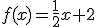
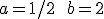
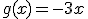
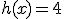
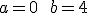
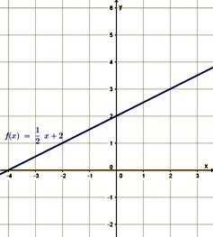
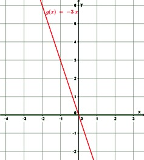
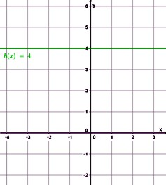
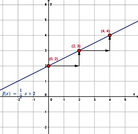

Matemática: Función Lineal
Pendiente
¿Qué nos indica la pendiente?
Representamos en un gráfico las rectas que se definen mediante las siguientes funciones lineales:
|
  |

|
  |
|  |  |  |
|
Para valores positivos de a (a> 0), la función lineal es creciente. |
Para valores negativos de a (a< 0), la función es decreciente. | Para a = 0 la función es constante. |
En la representación gráfica de la función lineal observamos dos puntos pertenecientes a ella como son el (0; 2) y el (2; 3). Vemos que cuando la variable x avanza dos unidades, la variable y sube 1 unidad.
En el punto (4; 4) perteneciente a la misma recta se verifica también esta propiedad.

|
La pendiente de una función lineal indica, en el gráfico, cuánto aumenta la coordenada y por cada unidad que aumenta la coordenada x. |
Obra publicada con Licencia Creative Commons Reconocimiento Compartir igual 4.0